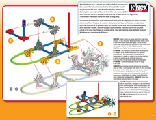
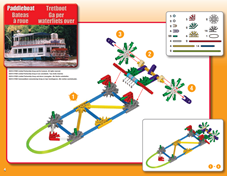
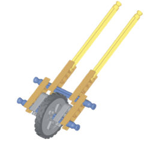

-
Do It! K'NEX STEM Simple Machines: Build and Measure with Wheels and Axles
 The Challenge
The ChallengeYour challenge is to build wheel and axle machines to learn more about how they make work easier. First you will build a machine of your choice from the K’NEX instruction manual. Then you will build the trundle wheel and use it to measure objects. You will display the data you collect on a line plot.
Think about the wheels on a skateboard or a bike. The wheel is a round disk and the axle is a rod that runs through it. Wheels and axles can help you move something farther and faster.
Which is faster, riding your bike or walking to school? Is it easier to slide a fridge across the floor, or roll it on four wheels?

K'NEX STEM Simple Machines: Wheels & Axles and Inclined Planes Instruction Manual
Project Steps-
Build a Wheel and Axle Machine
-
Build a Trundle Wheel
-
Test Your Trundle Wheel and Plot Your Data
Build a Wheel and Axle Machine
Build a simple machine model from the K'NEX STEM instruction manual. Some of these may not seem like wheels and axles at first, but pay attention to what is rotating and what it rotates around. Hint: The wheel and axle can rotate together, or they can move separately.
After you build your model, take a picture, label the wheel and axle, and answer the following questions:
- What is the name of the simple machine model that you built?
- What does your model use its wheel and axle for?
- What job does the machine do in the real world?
- How does the machine make work easier?
- Record any additional thoughts, questions, or discoveries.
Build a Trundle Wheel
- Watch this video to learn more about trundle wheels. As you watch, think about the following questions.
- How did the trundle wheel make work easier?
- What is the job of a trundle wheel?
- What parts of the trundle wheel help it do its job?
- Build the trundle, also called a measuring wheel, from the K'NEX STEM Simple Machines: Wheels & Axles and Inclined Planes Instruction Manual.
Test Your Trundle Wheel and Plot Your Data
After you build the trundle wheel, test it out.
- Use a piece of string and a ruler to measure the distance around the wheel and record that measurement. Important: each time the wheel rotates one time, it travels the distance that was measured. For example, if the distance around the wheel is 1 inch, then each time the wheel rotates one time, it travels 1 inch.
- Cut a piece of paper into a circle the same size as the distance around the wheel.
- On the piece of paper, write the fractional parts of an inch: 1/4, 2/4, 3/4, and 4/4. See image below.
- Attach the paper to the wheel.
- Find 10 objects to measure using the trundle wheel.
- Measure the objects to the nearest ¼ of an inch.
- Collect your data.
- Create a line plot to display the length of the objects that you measured. You can use a Google Slide to do this. Click here for a Line Plot Template
-